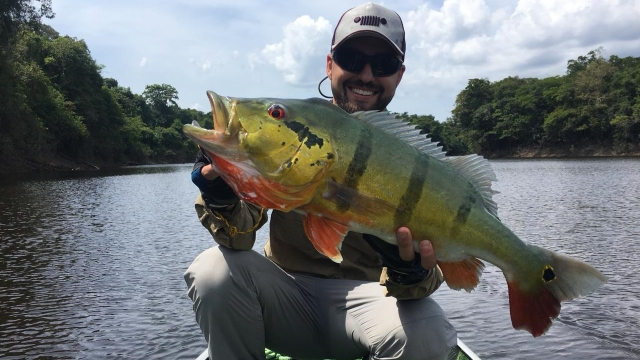
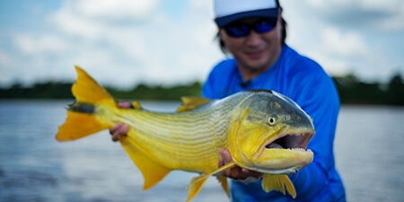
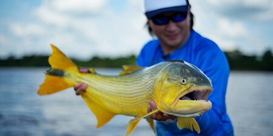
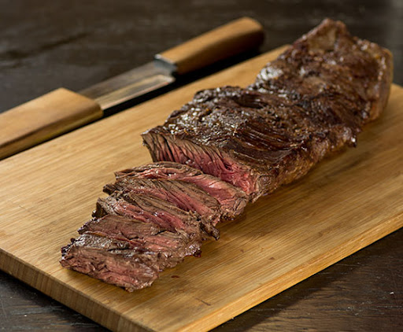
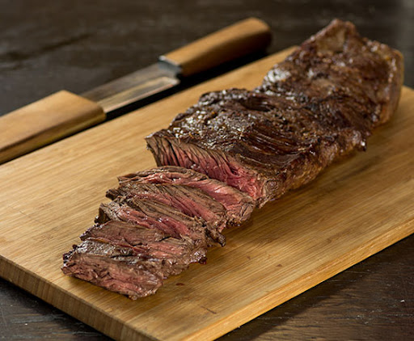

Pesca Esportiva
O objetivo da pesca esportiva é fisgar o peixe, não para consumo ou comércio, mas pelo prazer de pescar. Por isso os peixes são devolvidos vivos a natureza. Geralmente os pescadores pesam, medem e fotografam o peixe antes de devolvê-lo a água. A devolução do peixe a água tem o objetivo deixar o peixe crescer ainda mais, e desovar mais vezes, aumentando a população. Em água doce é maior a chance de sobrevivência do peixe solto do que na água salgada. Porém, são necessários inúmeros cuidados para que o peixe não seja muito ferido pelo anzol, ou mesmo na manipulação antes de sua soltura. Sem esses cuidados, normalmente o peixe morre.
 


VÍDEO DE DICAS PARA UMA BOA PESCARIA
 
